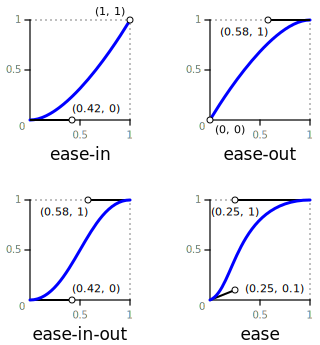
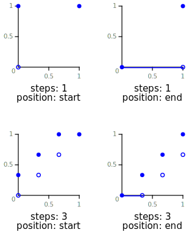

分享者：@曹俊超
allnone时间单位：s、ms
和 animation-timing-function 可取值一样，由 CSS Timing 规范规定
负值也是合法的。Demo
const vendors = ['webkit', 'ms', 'moz', 'o'];
let isSupport = false;
[...vendors, ''].forEach(prefix => {
if (`on${prefix}transitionend` in window) {
isSupport = true;
}
});
console.log(isSupport);
List with transtion demo
图像，与cubic-bezier(0,0,1,1)效果一样，但并非 cubic-bezier() 的特殊值
cubic-bezier(0.25, 0.1, 0.25, 1)cubic-bezier(0.42, 0, 1, 1)cubic-bezier(0, 0, 0.58, 1)cubic-bezier(0.42, 0, 0.58, 1)
.box {
width: 100px;
height: 100px;
background: #fa0;
}
.box.active {
transform: translateX(300px);
transition: transform 3s;
}
.demo-item.linear .box.active {
transition-timing-function: linear;
}
.demo-item.ease .box.active {
transition-timing-function: ease;
}
.demo-item.ease-in .box.active {
transition-timing-function: ease-in;
}
.demo-item.ease-out .box.active {
transition-timing-function: ease-out;
}
.demo-item.ease-in-out .box.active {
transition-timing-function: ease-in-out;
}
steps(1, start)steps(1, end)
.box {
width: 100px;
height: 100px;
background: #fa0;
}
.box.active {
transform: translateX(300px);
transition: transform 3s;
}
.demo-item.step-start .box.active {
transition-timing-function: step-start;
}
.demo-item.step-end .box.active {
transition-timing-function: step-end;
}
.demo-item.steps-start .box.active {
transition-timing-function: steps(3, start);
}
.demo-item.steps-end .box.active {
transition-timing-function: steps(3, end);
}
@keyframes move {
from {
transform: translate(0, 0);
}
to {
transfrom: translate(100px, 100px);
}
}
@keyframes move {
0% {
transform: translate(0, 0);
}
70%, 90% {
transform: translate(120px, 0);
animation-timing-function: ease-in;
}
80% {
transfrom: translate(90px, 0);
animation-timing-function: ease-out;
}
100% {
transfrom: translate(100px, 0);
}
}
/* Keyword value */
animation-iteration-count: infinite;
/* values */
animation-iteration-count: 3;
animation-iteration-count: 2.4;
/* Multiple values */
animation-iteration-count: 2, 0, infinite;
.box {
animation: spin 50s linear infinite,
bg 100s step-end infinite;
}